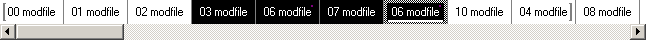

Order List
The order list contains patterns to play in sequence in the current project. It exists as a widget inside the primary pattern editor, where it is toggled from the pattern editor context menu -> "Show orderlist".

Working with the orderlist
- Press Enter to ascend into the selected pattern for editing. Focus is returned to the orderlist by pressing Esc from a root pattern.
- The "Follow"-toolbar and the associated checkbox in the pattern editor controls whether the primary pattern editor should always display the currently selected pattern in the orderlist.
- There should not be any looping patterns in the orderlist; pattern loops override the orderlist.
- Patterns are played through entirely before advancing to the next pattern in the orderlist. Remember to set the pattern length accordingly.
Orderlist context menu
Right+click on a pattern to bring up the context menu:
Insert Order:
Clone Pattern:
New Pattern:
Remove Order:
Delete Pattern:
Select Pattern:
Cut/Copy/Paste Order:
Pattern Properties:
Render to Wave:
Queue:
Set Loop Begin:
Set Loop End:
Play: